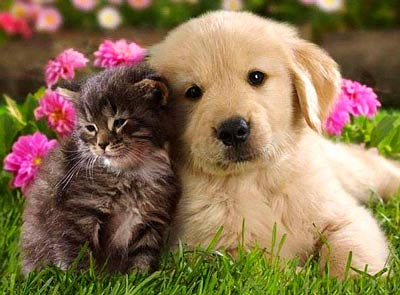

В мире есть много животных:
млекопитающих, болотных,
редкие, опасные,
смешные есть и страшные.
Собаки, кошки, носороги,
пантеры, змеи и сороки.
Многие по зимам спят,
многие еду хранят.
Животных раньше было больше,
но многих истребили,
хоть в Африке, Китае, Польше
животные должны быть в мире!
Автор стиха: Бровко Александр

Украина
Моя Украина, родная страна!
Никто, никогда не свергнет тебя!
Не дам никому разрушить народ!
Я люблю нашу родину, я патриот.
Молюсь я за мир в нашей стране!
Не хочу даже думать я о войне!
Мы волей и духом сильный народ!
И нас никогда никто не убьет!
Вышиванку оденем, веночки сплетем!
И пускать венки мы на речку пойдем!
Чтоб народы сдружились и войны прошли,
Чтоб солдаты с войны живыми пришли!